01
Aplicação de marca
Sua identidade já existe. Eu faço ela funcionar em fachada, embalagem, uniforme, impresso e digital — com o arquivo fechado do jeito que a gráfica precisa: corte, sangria, cor e vetor.
Sua marca precisa virar fachada, embalagem, vídeo e post. Normalmente isso passa por quatro fornecedores. Aqui passa por um.
O que eu resolvo
01
Sua identidade já existe. Eu faço ela funcionar em fachada, embalagem, uniforme, impresso e digital — com o arquivo fechado do jeito que a gráfica precisa: corte, sangria, cor e vetor.
02
Foto de produto, lifestyle e filme publicitário sem set, sem equipe e sem diária. Produzido digitalmente e dirigido por mim, do roteiro ao corte final.
03
Ilustração vetorial, composição e layout impresso. Do rascunho ao arquivo pronto pra produção — sem intermediário, sem retrabalho.
Trabalho comissionado
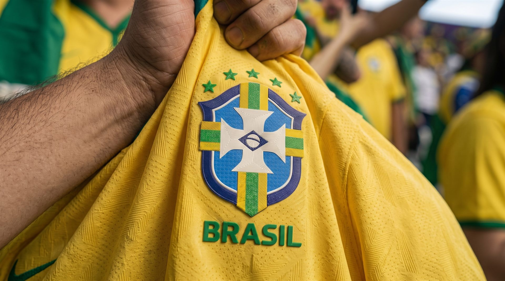
Jorik Têxtil
Campanha de Copa para uma fabricante de termocolantes. O brasão da Seleção foi redesenhado em vetor para aplicação em patch termotransferível — e o filme mostra o produto aplicado, não um conceito abstrato. Vetorização, direção e produção do vídeo.
Jorik Têxtil
Arraste para comparar
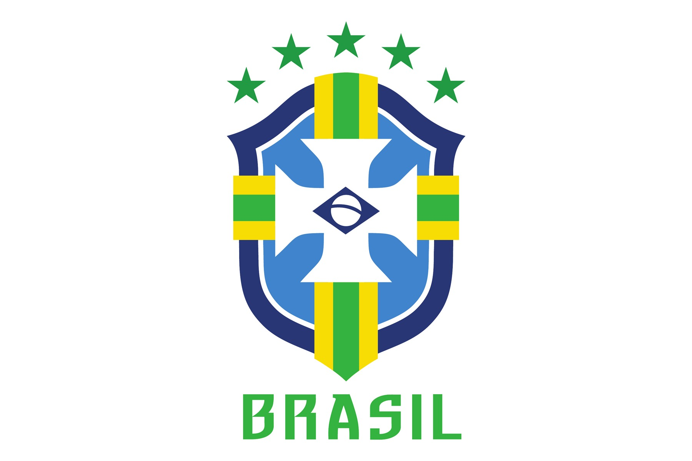
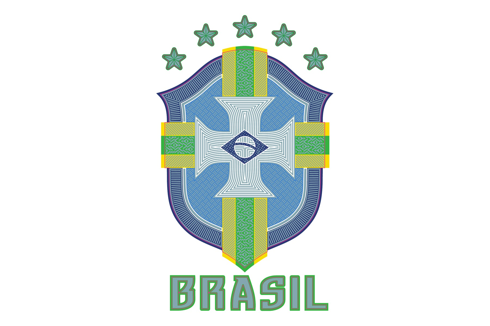
Recriação vetorial do brasão da Seleção a partir de referência fotográfica, para aplicação têxtil termotransferível. À esquerda o traçado limpo; à direita o arquivo fechado, com a texturização que a produção exige. É esse segundo passo que separa um vetor bonito de um arquivo que a máquina aceita.
Sob liberação do cliente
Atualmente na Dzigna, agência de branding em Maringá. O trabalho feito lá cobre a marca inteira em campo — organizado por superfície, não por cliente:
Não comissionado · projeto próprio
OLD TOWN Barber & Coffee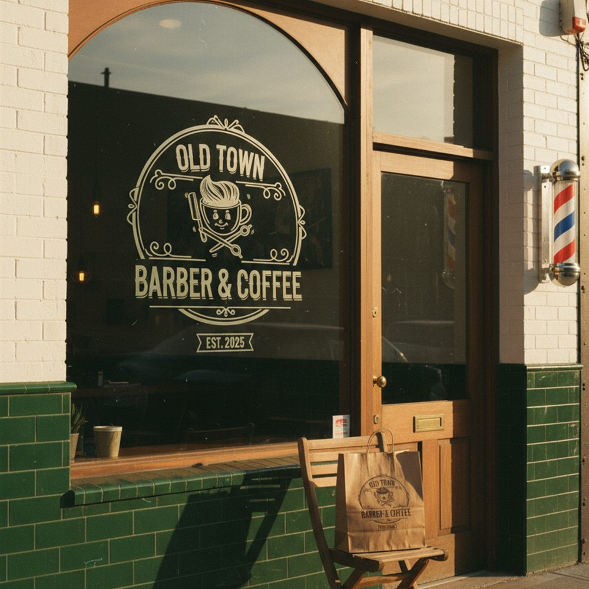
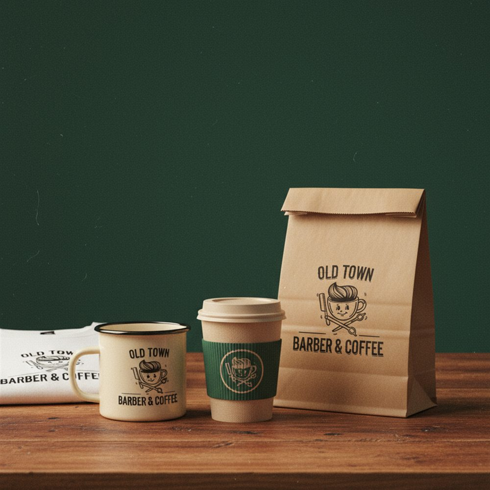
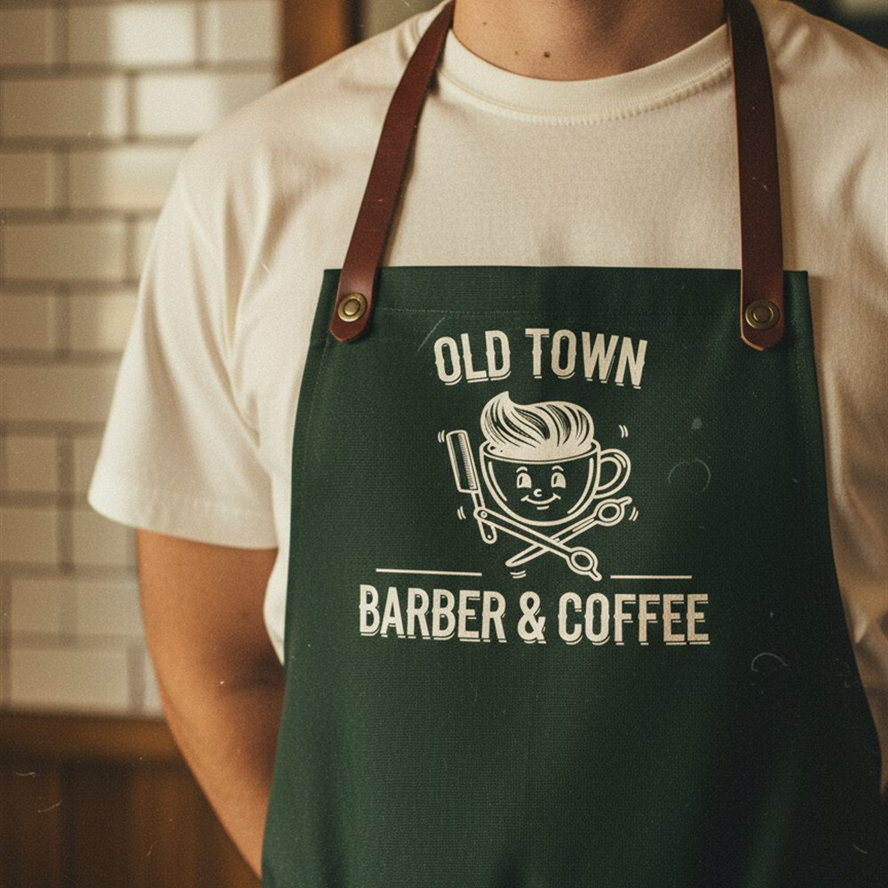
Marca conceitual para uma barbearia com cafeteria — dois rituais que compartilham o mesmo senso de tempo e comunidade. O posicionamento e o desenho da marca são meus; a exploração visual e as aplicações foram produzidas com IA generativa.
Conceito · não comissionado · 04 filmes
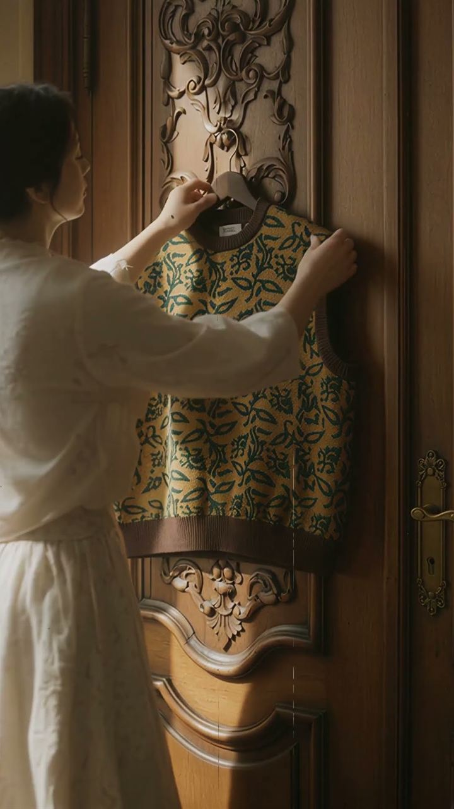
Carnan × Copacabana Palace Estudo de direção para moda — luz de fim de tarde no Rio, ouro e mármore como textura de luxo. Exercício de elegância e ritmo lento. Produzido integralmente com IA generativa. Chevrolet Camaro ZL1 Estudo de direção automotiva — close extremo no farol, flare estourado sobre areia de deserto. Exercício de agressividade e escala. Produzido integralmente com IA generativa.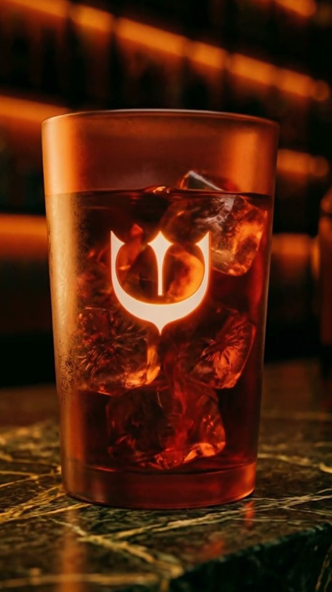
Arden Spa Estudo de direção para bem-estar — vapor, pele e luz baixa em plano fechado. Exercício de calor e intimidade. Produzido integralmente com IA generativa.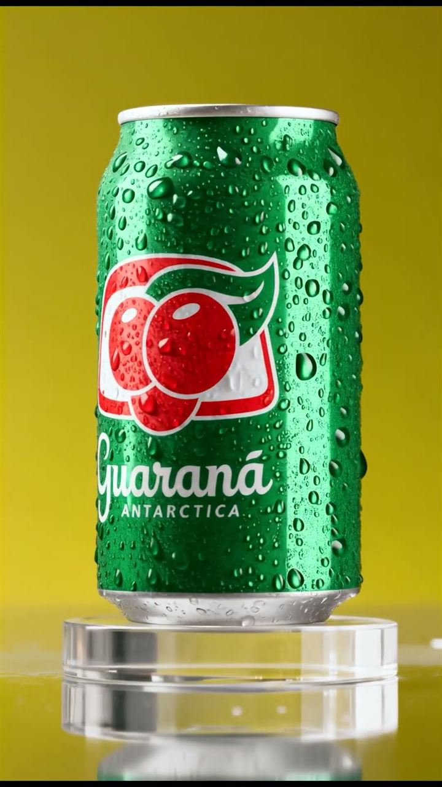
Guaraná Antarctica Estudo de direção para bebida — respingo congelado, cor saturada e sol de verão. Exercício de frescor e brasilidade. Produzido integralmente com IA generativa.A ferramenta que eu construí
Meio-tom tonal: a ferramenta lê o brilho de cada célula da imagem e carimba no lugar uma forma vetorial. Não é ASCII art nem pixel art — é retícula de verdade, com controle sobre qual forma ocupa cada faixa de luz e sombra.
Mexe aí. O que você exportar em SVG abre editável no Illustrator, não como bitmap traçado.
Sete formas, da mais clara à mais escura. Pra imagem funcionar, a área preenchida precisa crescer sem inverter em nenhum passo — se um estado escuro tem menos tinta que o anterior, o olho lê um relevo que não existe na foto. Em vez de conferir no olhômetro, escrevi um script que mede a área de cada SVG e reprova o build se a rampa quebrar. Ele pegou duas inversões que eu não tinha visto.
Arquivo HTML único. Abre com duplo clique, roda offline, não instala nada.
Abrir ferramenta → Código no GitHub →
Técnica original de Anton Burmistrov (@antoncreations). Implementação independente, com controles adicionais. MIT, sem fins comerciais.
Do primeiro contato ao arquivo final
01
Você me conta o que a marca precisa.
02
Eu volto com escopo, prazo e valor fechado.
03
Você acompanha. Ajuste faz parte, não é extra.
04
Arquivo aberto, arquivo fechado e o que a gráfica pedir.
Valor sai depois do briefing — nunca antes de entender o que você precisa.
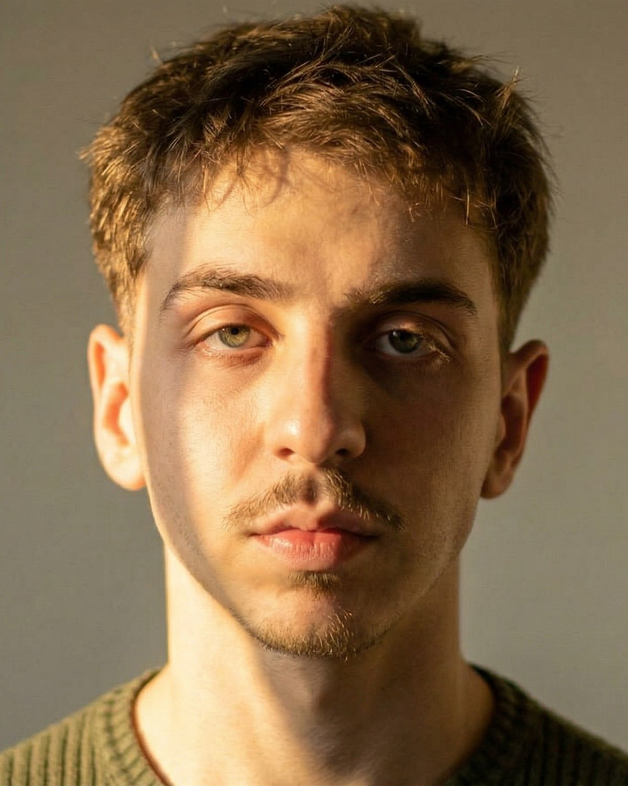
Quem sou
Designer gráfico em Maringá. Trabalho com aplicação de marca, arte-final e produção de imagem — na agência durante a semana, em projetos próprios fora dela.
Aprendi a fechar arquivo antes de aprender a dirigir campanha, e é por isso que o que eu entrego chega pronto. Uso IA como ferramenta de produção, e digo abertamente onde uso.
Atualmente na Dzigna, agência de branding em Maringá
Contato
Me conta o que sua marca precisa. Eu respondo com escopo, prazo e valor.